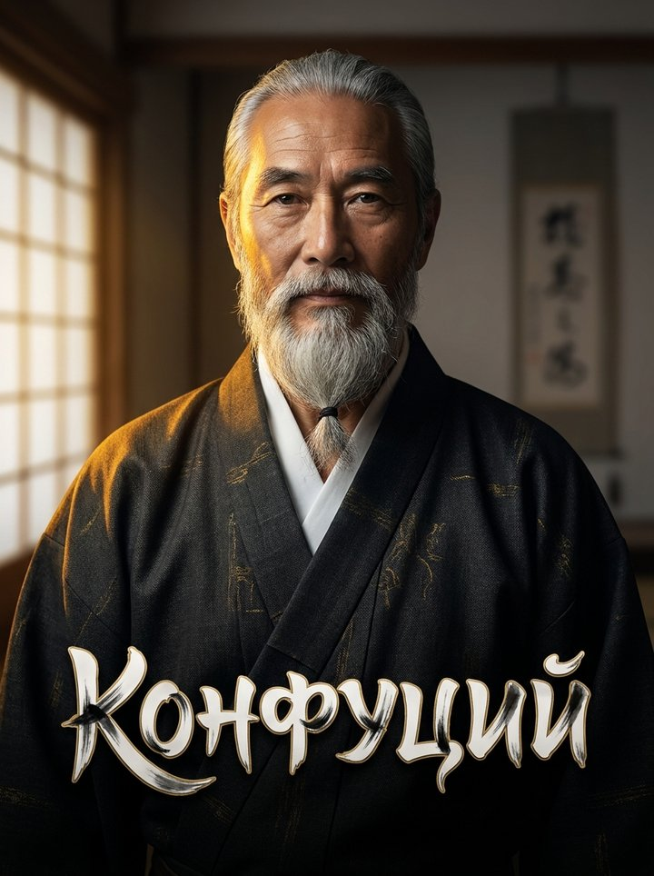
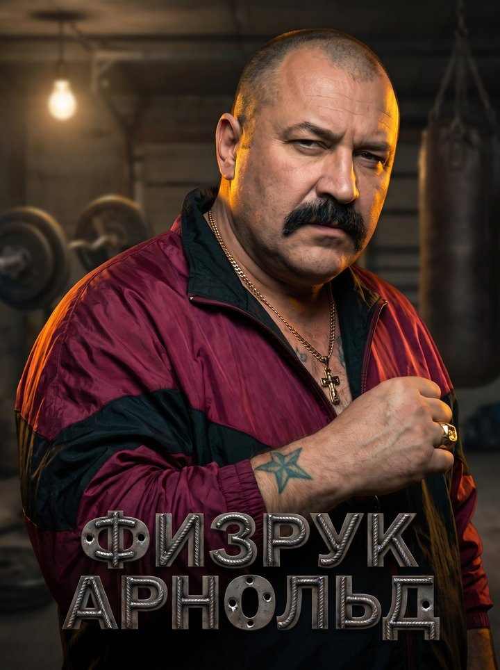
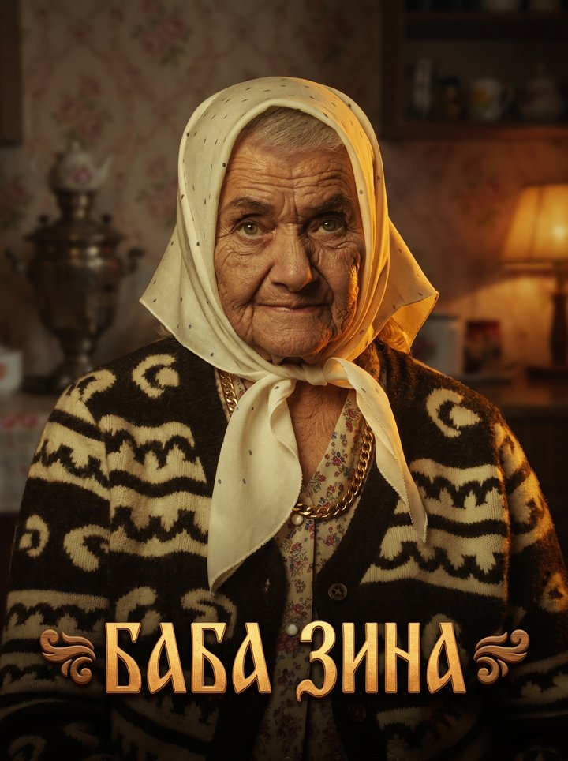

Ты не «отмечаешь прогресс» — ты даёшь слово вслух, на камеру, и каждый день доказываешь, что оно чего-то стоит. Это три отличия от привычных трекеров:
Клятва записывается на видео и живёт как факт, а не как строчка в списке дел, которую легко удалить.
Кто-то узнает, что ты не сдержал слово: бот, свидетель или — если выбрал публичный режим — все в группе.
Персонаж с характером говорит с тобой каждый день по-настоящему, а не шлёт дежурное «не забудь позаниматься».
Ничего эзотерического — три механизма, на которых давно строятся «commitment device»-инструменты вроде stickK, только у нас в основе не деньги, а слово и репутация.
Люди не достигают целей не потому, что не знают как. А потому, что за слив ничего не будет. Мы это чиним.
«Я, [имя], даю слово, что…» — на камеру, вслух. Сказать — не то же самое, что напечатать. Себе на камеру не соврёшь.
Своё слово — как минимум. При желании — звёзды Telegram. На кону должно быть что-то, что реально жалко потерять.
Персонаж — строгий или тёплый, выбираешь сам — держит тебя в курсе каждый день, пока ты держишь слово.
Дошёл — статистика скажет, что ты в 1% тех, для кого слово имеет цену. Слился — тоже узнают. Без розовых соплей.
Не абстрактная «цель». Конкретное обязательство с датой, привычка с жёсткими правилами или отказ, который проверит кто-то, кроме тебя.
Коротко и без воды — остальное можно спросить в Поддержке прямо в боте.
Да. Сейчас — первая волна, без денег: ставишь слово, а не деньги. Ставки звёздами Telegram появятся позже, и это будет твой выбор, а не обязаловка.
Пишешь в Поддержку в течение 24 часов после срыва — разбираем по-человечески, живыми людьми, а не автоматическим отказом.
Нет. Ни диплома, ни курса, ни воронки допродаж. Один инструмент: ты дал слово — бот и, по желанию, люди вокруг следят, сдержал ты его или нет.
Да, пост уходит в открытую группу Telegram, и отчёты видны всем. Именно это поднимает выполняемость — привычное «пообещал себе и забыл» здесь не проходит. Не готов — есть личный режим, где всё видишь только ты и бот.
Через свидетеля — человека, которому доверяешь. Раз в неделю бот спрашивает у него, всё ли в порядке, а в конце срока свидетель выносит финальный вердикт.
В личном режиме — только ты и бот. В публичном — то, что ты сам публикуешь: клятва и ежедневные отчёты, и ничего больше.
Выбираешь, каким тоном с тобой говорят каждый день: мудростью, силой, любовью — или без цензуры.



«Ты не сорвался. Ты просто ещё ни разу не давал слово по-настоящему.»Сила Слова
Без спама. Одно письмо, когда откроется широкий доступ и появятся новые механики.